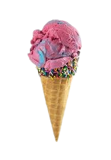

About Sweet life
Founded in 2024, quickly became more than a music festival—it embodied a movement. Originating in Maryland, this annual event blended music, food, and sustainability in a harmonious celebration of life's sweetness. With headliners like The Strokes and Lana Del Rey, Sweetlife also championed local, organic eats, with foodie favorites and eco-conscious initiatives, fostering a community dedicated to good tunes and even better vibes. Its legacy lives on as a symbol of a generation's desire for wholesome experiences, where the beats were infectious, the food was ethically sourced, and the memories were simply sweet.
